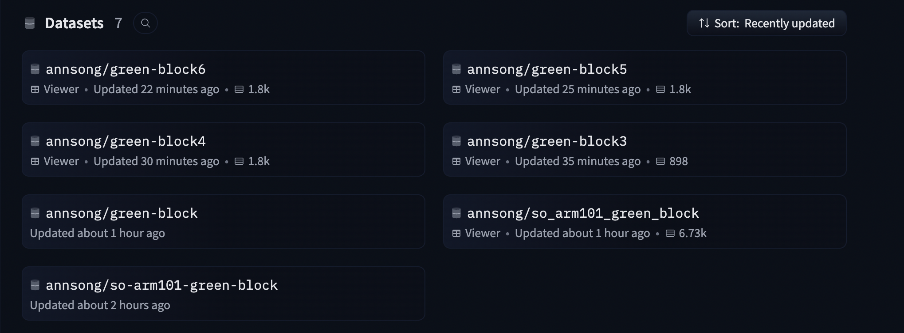

Hey there! This is ongoing documentation of my process learning physical AI on the SO-ARM101.
I started recording episodes today. Started by recording five episodes only to find that the parquet file kept on getting corrupted. Then for some reason it just started not getting corrupted? Happy to announce I was not able to reproduce the issue, so if after the 50 episodes I plan to record tomorrow end with a corrupted file, then wow that would be unfortunate.
After recording 7 times and green-block4, green-block5, and green-block6 showing no corruption, I decided to call it a day.

Set up robot environment.
Calibrated follower and leader arms and got teleop working.
Last Updated: May 2026